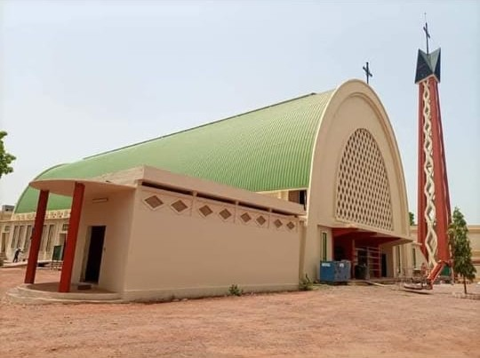

Cathédrale Notre Dame de Lourdes
Description
Située en plein cœur de Bobo-Dioulasso, la cathédrale Notre Dame de Lourdes est l’un des principaux lieux de culte catholique du Burkina Faso. Construite en briques rouges, elle séduit par son architecture simple mais majestueuse. C’est un lieu de paix, de méditation et de recueillement. Elle accueille régulièrement des célébrations religieuses importantes, ainsi que des concerts de chorales.
Historique
La cathédrale fut construite au début du XXe siècle par les missionnaires catholiques, dans le but de diffuser la foi chrétienne dans la région. Elle a joué un rôle fondamental dans l’éducation et l’évangélisation locale, notamment grâce aux écoles et dispensaires associés. Elle demeure aujourd’hui un symbole fort de la présence chrétienne dans la région de Bobo-Dioulasso.